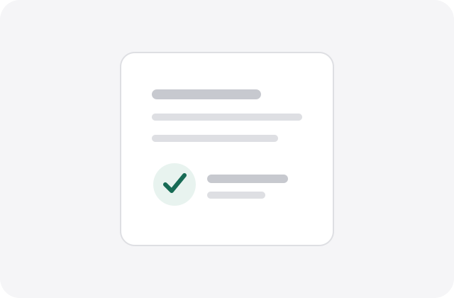

Dados mais úteis, processados no seu dispositivo.
Histórico, revisão adaptativa, importação assistida, exportação criptografada e handoff profissional — sem enviar seus dados de saúde para terceiros.
Branching local
Pergunte apenas o que ainda faz diferença.
O motor adaptativo procura lacunas e inconsistências no perfil atual. Ele não diagnostica e não inventa respostas.
Importação inteligente
Extraia localmente quando o navegador permitir.
Imagens podem ser processadas pelo recurso nativo TextDetector quando disponível. Caso contrário, cole o texto extraído pelo próprio aparelho. Nada é enviado para uma API externa.

Versionamento
Preserve medições em vez de sobrescrevê-las.
Salve um snapshot explícito para acompanhar peso, cintura, gordura estimada e contexto de treino ao longo do tempo.
Handoff
Uma camada de revisão, não uma prescrição automática.
Use o espaço abaixo para registrar observações de um profissional habilitado sem misturá-las com as respostas originais do usuário.
Portabilidade
Compartilhe um arquivo criptografado, não um link público.
A V1 usa PBKDF2 + AES-GCM via Web Crypto para proteger uma cópia exportada. A senha não é armazenada.
Analytics privacy-first
Métricas úteis sem telemetria de saúde.
Os indicadores abaixo são calculados localmente. Nenhum evento ou resposta é transmitido para um servidor.